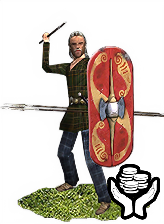
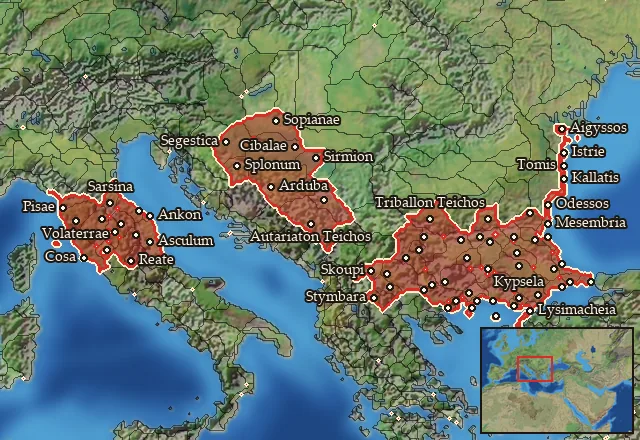

RTR: Imperium Surrectum
RTR: Imperium SurrectumMercenary Celtic Skirmishers

Mercenary. Hired from a regional pool, not recruited from a building.
Class: missile · Category: infantry · Men per unit: 40
Description
Recruited from amongst the poorest in Celtic society, these skirmishers were armed with a clutch of javelins, a small round shield, and a typical Celtic long sword.
Stats
| Rank in roster | Rank in roster | Rank in roster | Rank in roster | ||||||||
|---|---|---|---|---|---|---|---|---|---|---|---|
| Men per unit | 40 | ███······· 31% | Attack | 9 | █········· 14% | Charge bonus | 2 | █········· 11% | Defence | 17 | █········· 13% |
| · armour | 1 | █········· 0% | · defence skill | 12 | █········· 10% | · shield | 4 | █████····· 49% | Morale | 4 | █········· 0% |
| Discipline | Low | Training | Untrained | Upkeep per turn | 299 dn | █········· 9% |
Weapons
| Primary | Secondary | Primary | Secondary | Primary | Secondary | Primary | Secondary | ||||
|---|---|---|---|---|---|---|---|---|---|---|---|
| Attack | 9 | 4 | Charge bonus | 2 | 2 | Type | thrown · archery | melee · blade | Damage | piercing | piercing |
| Projectile | javelin | — | Range | 60 | — | Ammunition | 7 | — | Properties | Thrown | — |
Defence
| Primary | Secondary | Primary | Secondary | Primary | Secondary | Primary | Secondary | ||||
|---|---|---|---|---|---|---|---|---|---|---|---|
| Total | 17 | — | Armour | 1 | — | Defence skill | 12 | — | Shield | 4 | — |
Condition and terrain
| Hit points | 1 | Ground: scrub / sand / forest / snow | 8 / 0 / 8 / 0 | Charge distance | 30 | Formations | Square |
Technical stats
| Time between blows (primary / secondary) | 2.5 s / 2.5 s | Extra fatigue in hot climates | 0 | Collision mass per man (1.0 is normal) | 0.9 | Spacing between men: close / loose | 1.2 × 2.8 m / 2.16 × 5.04 m |
| Default ranks | 5 |
In battle: Can hide in long grass · Very good stamina
Where to hire it
Mercenaries are hired from a regional pool, not recruited from a building. This unit is offered by 3 pools covering 67 regions, at 2,303 dn to hire and 0 experience.

At least one of those pools sells to any faction that has an army in range — no faction restriction.
The 67 regions where this unit appears in a mercenary pool
Ager Gallicus · Agriania · Aigyssia · Amantinia · Andizetia-Azalia · Ankon Petra · Antheia · Artakia · Astia · Autariataia · Axios · Bessike · Bosporos · Brenaia · Breucia · Briantike-Korpilike · Camertia-Nahartia · Daesitiatia · Datos · Denthelentike · Deuriopos-Pelagonia · Diotike · Edonis · Elaiousa · Erigonia · Etruria · Etruria Meridionalis · Etruria Occidentalis · Etruria Orientalis · Etruria Septentrionalis · Eumolpia · Halmyris · Hebros · Hellenike Bistonia · Hesperos Skordiskia · Hesperos Triballia · Kabylia · Kainia · Kallatia · Kardia
…and 27 more.